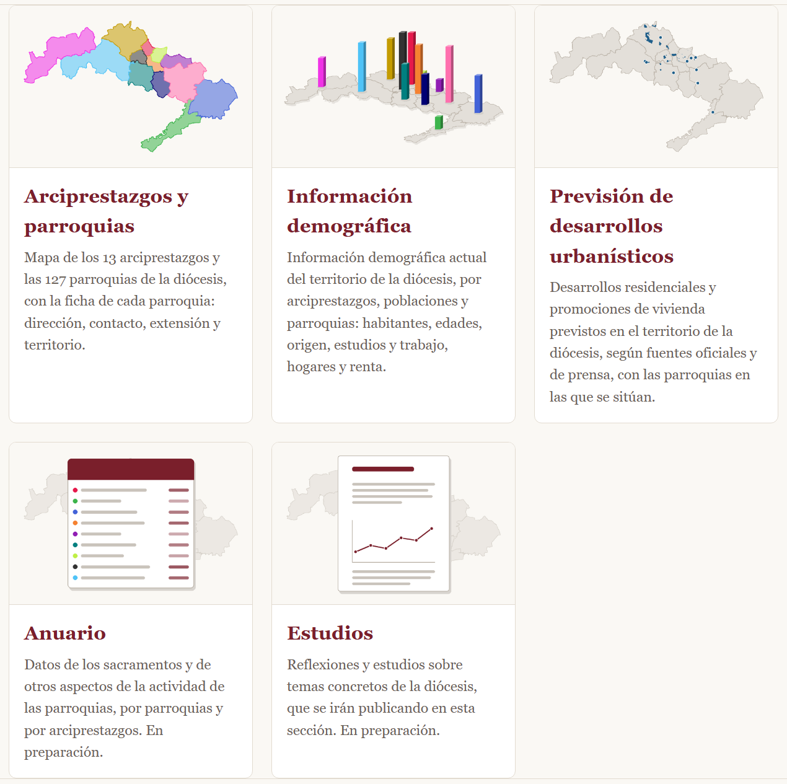
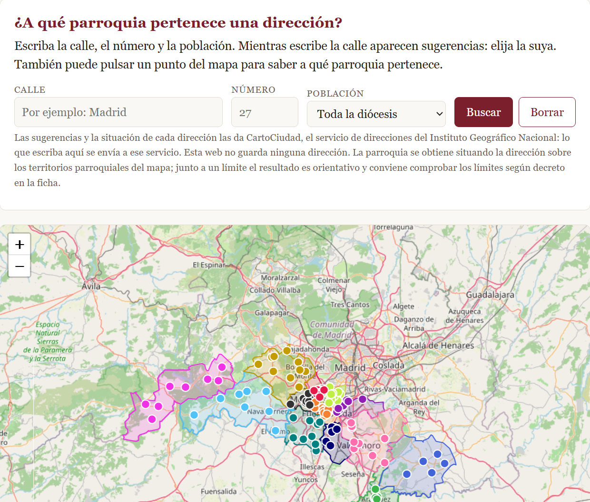
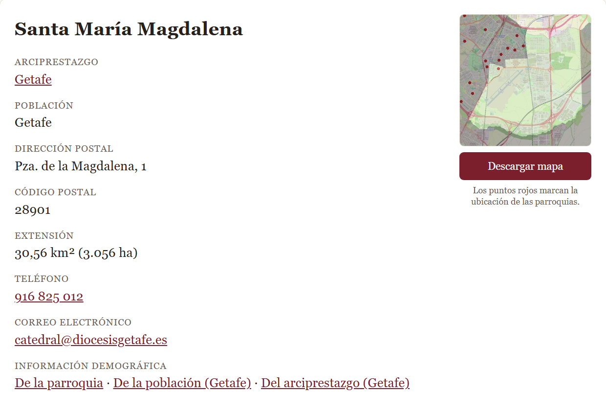
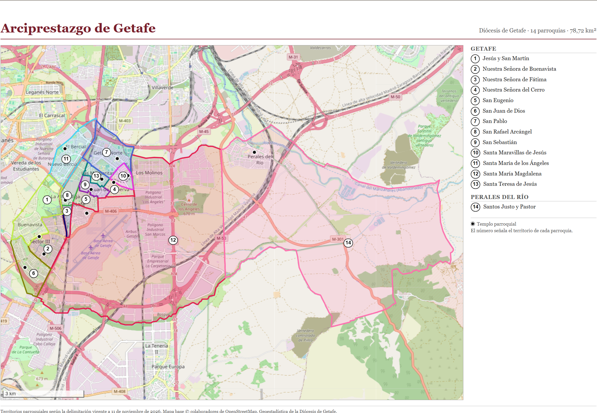
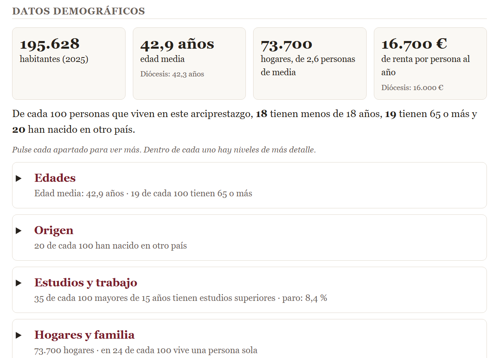
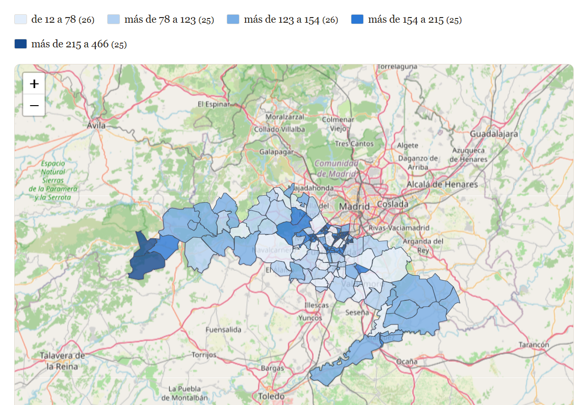
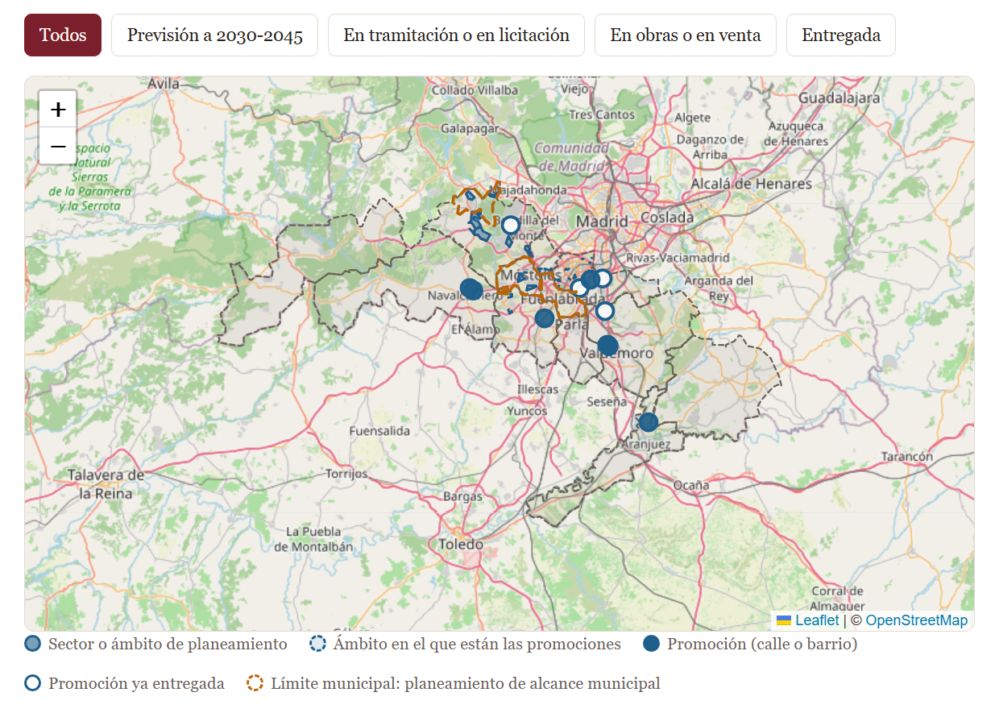

Propuesta de un servicio web de información sobre el territorio, la población y el crecimiento previsto
de la diócesis
13arciprestazgos
127parroquias
49poblaciones
1.729.840habitantes (2025)
2.303 km²de territorio
Qué es
Un sitio web público, de consulta libre y gratuita, que reúne en un solo lugar la información territorial y
estadística de la diócesis: qué parroquias hay y cuál es el territorio de cada una, quiénes viven en él y cómo se
espera que crezca. Se presenta como una propuesta de servicio para información del clero y de los feligreses.

Portada del sitio, con sus cinco secciones.
Noviembre de 2026
Objetivos
Ayudar a decidir
Dar al obispo y a sus órganos consultores datos objetivos para estudiar la
creación de nuevas parroquias y la distribución del clero.
Conocer el territorio
Ofrecer al clero y a los agentes de pastoral de cada parroquia un
retrato de la población a la que sirven.
Informar a todos
Permitir que cualquier persona sepa a qué parroquia pertenece su domicilio
y consulte los datos de su zona.
Tres niveles de información
1
Base
Arciprestazgos, parroquias, sus territorios y sus datos básicos.
2
Demografía actual
Quiénes viven hoy en cada parroquia, población y arciprestazgo.
3
Previsión
Dónde se van a construir viviendas y cuántas.
Metodología
Fuentes
Decretos de erección y delimitación de los territorios parroquiales.
Datos del Instituto Nacional de Estadística (INE) por sección censal y por municipio.
Planeamiento urbanístico oficial, boletines, licitaciones y prensa.
→
Elaboración
Los datos del INE se reparten entre las parroquias según la superficie de cada sección censal que cae en cada una.
Los de una población, un arciprestazgo o la diócesis son la suma de sus parroquias.
Cada desarrollo urbanístico se sitúa sobre el territorio de su parroquia.
→
Publicación
Mapas interactivos, fichas, tablas y gráficos.
Datos descargables.
Una página explica el procedimiento y las fuentes.
Criterios de trabajo
Solo cifras agregadas. No se publica ningún dato personal.
Cada dato, con su fuente y su fecha. Todo se puede comprobar en el original.
Sin cifras inventadas. Si un dato falta, se deja vacío y se dice por qué.
Proceso reproducible. El sitio se genera de forma automática a partir de los datos: actualizarlo
cuando cambian los límites o cuando el INE publica datos nuevos es rápido.
Sin coste de alojamiento y sin cookies ni registro de visitantes.
Alcance de los datos. Los datos demográficos de las parroquias son estimaciones:
sirven para hacerse una buena idea, no son cifras exactas. Los de arciprestazgos y de la diócesis coinciden con las
cifras oficiales de sus municipios. Los datos son de las personas empadronadas en el territorio, no de los feligreses.
Sección 1
Arciprestazgos y parroquias
El mapa de la diócesis, con la ficha de cada una de sus 127 parroquias.

Buscador de direcciones y mapa de los 13 arciprestazgos.
Qué ofrece
Buscador de direcciones: se escribe una calle y un número y responde a qué parroquia y a qué
arciprestazgo pertenece ese domicilio.
Ficha de cada parroquia: dirección, teléfono, correo, extensión, mapa de su territorio y texto de
los límites según su decreto.
Mapa del atlas de cada parroquia, que se puede descargar.
Mapa de cada arciprestazgo preparado para imprimir en tamaño A3.

Ficha de una parroquia.

Mapa del arciprestazgo de Getafe
para imprimir en A3.
Parroquias y extensión de cada arciprestazgo
Leganés16 43 km²
Getafe14 79 km²
Alcorcón12 34 km²
Fuenlabrada11 39 km²
Móstoles11 44 km²
Valdemoro10 291 km²
Villaviciosa de Odón10 225 km²
Griñón9 141 km²
Navalcarnero8 396 km²
Parla8 86 km²
San Martín de Valdeiglesias8 395 km²
Aranjuez5 189 km²
Chinchón5 341 km²
Número de parroquias (barra) y extensión del arciprestazgo. Territorios según la delimitación vigente
a 11 de noviembre de 2026.
Sección 2
Información demográfica
Quiénes viven en el territorio de cada parroquia, de cada población, de cada arciprestazgo y de toda la diócesis.
Qué ofrece
Fichas en cuatro niveles con habitantes, edades, origen, estudios y trabajo, hogares, renta,
nacimientos, defunciones y matrimonios.
Tablas para comparar las 127 parroquias y las 49 poblaciones, que se ordenan por cualquier dato.
Mapa temático: las parroquias coloreadas según el dato que se elija.
Descarga de los datos para trabajar con ellos en una hoja de cálculo.

Resumen de la ficha de un arciprestazgo; cada apartado se despliega.
Habitantes y crecimiento desde 2021
Móstoles214.293 +2,7 %
Leganés195.946 +3,8 %
Getafe195.628 +6,4 %
Valdemoro191.258 +7,6 %
Fuenlabrada189.814 −1,5 %
Alcorcón176.806 +3,0 %
Parla153.525 +6,1 %
Villaviciosa de Odón135.446 +9,4 %
Griñón93.398 +8,5 %
Navalcarnero71.407 +8,8 %
Aranjuez63.838 +6,1 %
San Martín de Valdeiglesias26.787 +7,8 %
Chinchón21.694 +7,5 %
Diócesis: 1.729.840 habitantes, +4,9 % desde 2021.
Índice de envejecimiento
Alcorcón182
Leganés180
Móstoles180
Fuenlabrada151
San Martín de Valdeiglesias149
Chinchón146
Getafe134
Aranjuez121
Navalcarnero92
Villaviciosa de Odón92
Valdemoro84
Parla81
Griñón60
Mayores de 64 por cada 100 menores de 15. Diócesis: 127.
Lo que muestran los datos
La diócesis ha ganado un 4,9 % de habitantes en cuatro años. El arciprestazgo que más crece es
Villaviciosa de Odón (+9,4 %); el único que pierde población,
Fuenlabrada (−1,5 %).
El envejecimiento es muy desigual: en Alcorcón hay 182
mayores por cada 100 niños; en Griñón, 60.
Uno de cada cinco habitantes (20 %) ha nacido en otro país.
Fuente: Instituto Nacional de Estadística (Censo anual de población, 2021-2025). Elaboración propia.

Mapa temático: índice de envejecimiento por parroquias.
Sección 3
Previsión de desarrollos urbanísticos
Dónde se van a construir viviendas en la diócesis, cuántas y en el territorio de qué parroquia.
35desarrollos, promociones y planes recogidos
49.456viviendas previstas
77 %en solo dos arciprestazgos: Villaviciosa de Odón y Móstoles

Mapa de los desarrollos. Se pueden filtrar por estado.
Qué ofrece
Mapa y tabla de todos los desarrollos, con su municipio, su arciprestazgo, su parroquia, su estado y sus viviendas.
Ficha de cada desarrollo con su descripción y sus fuentes.
Enlace desde cada parroquia y cada arciprestazgo a los desarrollos de su territorio.
Los polígonos son ámbitos oficiales del planeamiento: ninguno se ha dibujado a mano.
Viviendas previstas por arciprestazgo
Villaviciosa de Odón23.585
Móstoles14.417
Alcorcón3.500
Leganés2.852
Getafe2.403
Navalcarnero860
Valdemoro820
Griñón415
Aranjuez400
Parla184
Fuenlabrada20
Chinchón0
San Martín de Valdeiglesias0
Viviendas previstas según su estado
26.975Previsión a 2030-2045
19.018En tramitación o en licitación
3.463En obras o en venta
No se cuentan las viviendas ya entregadas ni el planeamiento de alcance municipal, que el sitio muestra aparte.
Para qué sirve
Permite anticipar dónde habrá barrios nuevos y qué parroquias recibirán más población, antes de que lleguen los vecinos.
Fuentes: notas de prensa de la Comunidad de Madrid y de los ayuntamientos, boletines oficiales, licitaciones
y prensa, citadas en la ficha de cada desarrollo. Datos del sitio a 14 de noviembre de 2026. Son previsiones y pueden cambiar.
Secciones 4 y 5 · en preparación
Anuario y Estudios
Dos secciones ya abiertas en el sitio, todavía sin contenido.
Anuario
Recogerá, por parroquias y por arciprestazgos, datos de los sacramentos y de otros aspectos de la actividad de las parroquias.
Presentados por años, permitirán seguir su evolución y relacionarlos con la población de cada territorio: por ejemplo,
los bautismos de una parroquia con los nacimientos de su zona.
Solo se publicarán cifras agregadas, nunca datos de personas concretas.
Estudios
Reunirá reflexiones y estudios sobre temas concretos de la diócesis, que se irán publicando.
Cada estudio indicará su fecha, los datos en los que se apoya y sus fuentes.
Resumen de las cinco secciones
Sección
Contenido
Estado
1. Arciprestazgos y parroquias
Mapa, buscador de direcciones, 127 fichas y mapas para imprimir
Publicada
2. Información demográfica
Datos del INE en cuatro niveles, tablas comparativas, mapa temático y descarga
Publicada
3. Previsión de desarrollos urbanísticos
35 desarrollos con 49.456 viviendas previstas
Publicada
4. Anuario
Sacramentos y actividad parroquial
En preparación
5. Estudios
Reflexiones y estudios sobre temas concretos
En preparación
Pasos siguientes
Anuario: reunir los datos de sacramentos por parroquia y año (cifras agregadas) y acordar qué datos se publican.
Estudios: elegir los primeros temas.
Mantenimiento: actualizar los datos demográficos cada año, cuando el INE publique el nuevo censo, e
incorporar los desarrollos urbanísticos nuevos.
Correcciones: recoger las que comuniquen las parroquias sobre sus datos y sus límites.